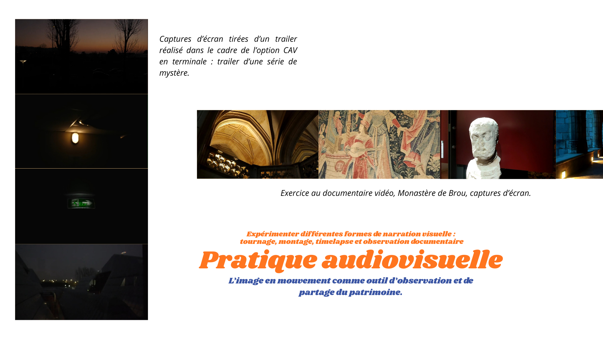

Étudiante en troisième année de licence de droit et d’histoire de l’art et archéologie à l’Université Lyon 2, je m’intéresse particulièrement aux formes de transmission et de documentation du patrimoine.
Parallèlement à mon parcours universitaire, je développe différentes pratiques visuelles : dessin, photographie, montage vidéo et création graphique. Ces pratiques constituent pour moi une manière d’observer les images, les œuvres et les espaces culturels, mais aussi d’expérimenter différents modes de narration visuelle.
